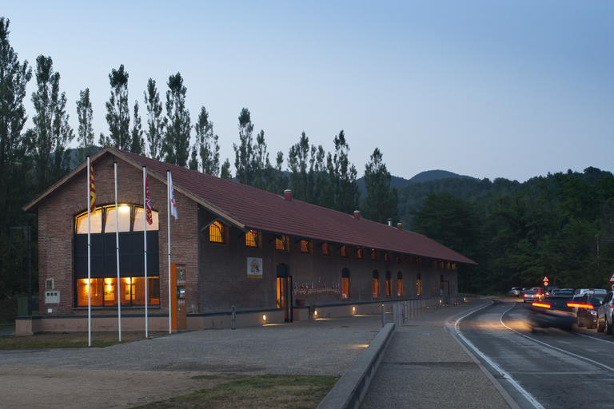

Servei · Sant Joan
L'antic magatzem de l'estació de tren és avui un Alberg de joventut. Hi trobareu habitacions amb bany, i la possibilitat de sopar i dinar, a més d'esmorzar! També podreu llogar-hi bicicletes per…